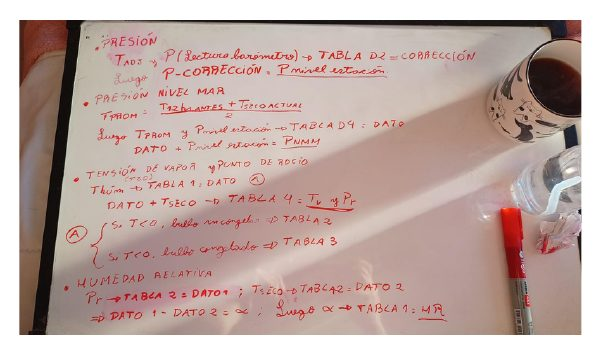
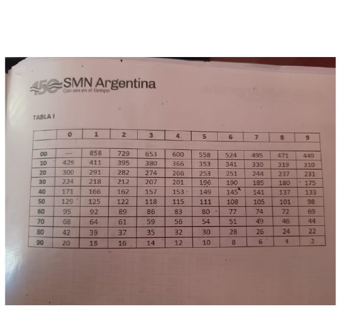
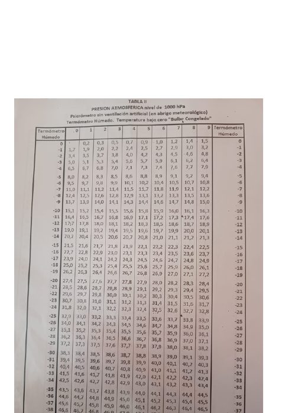
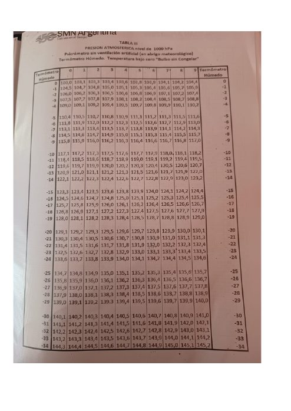
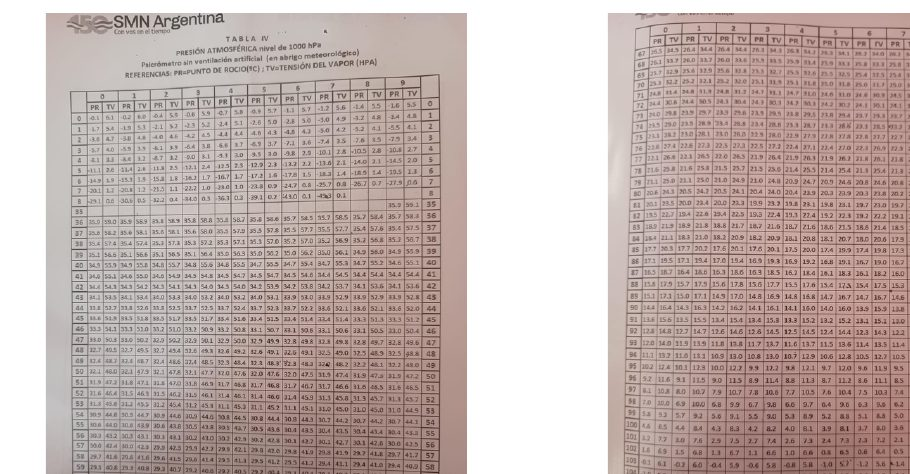
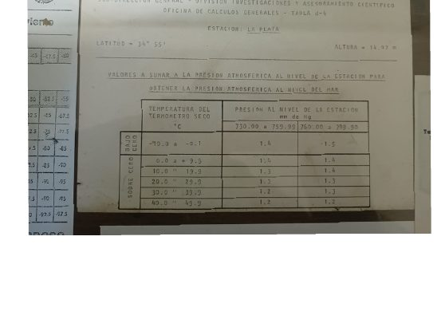

Fórmulas de Referencia
Cómo se calcula cada variable derivada
Guía para observadores
La observación puede cargarse desde esta página o desde el programa de escritorio instalado en la computadora de la estación; ambos guardan en la misma planilla. Se recomienda utilizar el programa cuando no haya conexión a internet en el momento de la carga: los datos quedan guardados localmente y se sincronizan de forma automática al restablecerse la conexión. Ante un error de "valor fuera de rango", verificar primero que no se trate de un error de tipeo.
Campos obligatorios: Hora, T. Bulbo Seco, T. Bulbo Húmedo, T. Adjunto y Barómetro. Los restantes son opcionales. La estación toma observaciones a las 09:00, 15:00 y 21:00 (hora local) — las tres horas sinópticas (12, 18 y 00 UTC).
Constantes de la estación
Latitud -34.9°, elevación 15 m.
Gravedad local g = 9.797207 m/s² (fórmula internacional de gravedad para esa latitud)
vs. gravedad estándar g₀ = 9.80665 m/s².
Definidas en observaciones/calculos.js.
La corrección del barómetro (punto 1) es equivalente a la Tabla D-2 del SMN ("corrección por gravedad, temperatura del termómetro adjunto e instrumental") — reproduce el mismo resultado que la búsqueda manual en dicha tabla, con precisión para cualquier lectura y no solo para los pasos de 0,5 °C / 10 mmHg en que está impresa.
Procedimiento manual de referencia
Procedimiento manual en el que se basa este sistema, adaptado a fórmulas y a la Tabla D-4.

1. Presión de estación (reducción del barómetro)
Corrige la lectura del barómetro de mercurio por la dilatación térmica del mercurio y por la gravedad local de la estación — la misma corrección de la Tabla D-2 del SMN (ver nota arriba).
B₀ = B + C_t
P_estación (mmHg) = B₀ × (g_local / g_estándar)
B: lectura del barómetro (mmHg) · T_adj: temperatura adjunta del barómetro (°C)
2. Tensión de vapor
Fórmula psicrométrica (Magnus-Tetens para la tensión de saturación + corrección psicrométrica de garita sin ventilación forzada).
e (hPa) = es_húmeda − 0.0008 × P_estación(hPa) × (T_s − T_h)
T_s: temperatura termómetro seco (°C) · T_h: temperatura termómetro de bulbo húmedo (°C)
3. Punto de rocío
4. Humedad relativa
HR (%) = (e / es_seca) × 100
Tablas SMN de referencia (tensión de vapor, punto de rocío, humedad relativa)
La tensión de vapor, el punto de rocío y la humedad relativa se obtienen mediante las fórmulas anteriores, sin necesidad de consultar estas tablas. Se incluyen las fotografías de referencia para su consulta o comparación con el procedimiento manual.




5. Presión reducida al nivel del mar (Tabla D-4 del SMN)
A diferencia de las demás variables, calculadas por fórmula, esta se obtiene de la tabla oficial D-4 —específica de esta estación— que los observadores ya utilizan en papel (SMN, Oficina de Cálculos Generales · Estación: La Plata · Latitud 34°55' · Altura 14,97 m). Aporta una corrección pequeña, casi constante, que se suma a la presión de estación según la temperatura promedio y el rango de presión.
corrección = TABLA_D4[fila de T_prom][columna de P_estación]
P_mar (mmHg) = P_estación + corrección
| T. Bulbo Seco promedio (°C) | 730,00 a 759,99 mmHg | 760,00 a 789,99 mmHg |
|---|
Si no se cargó la T. Bulbo Seco de 12 h antes, se aproxima con la T. Bulbo Seco actual. Fuera de estos rangos de temperatura o presión, se utiliza la fila o columna más cercana.
